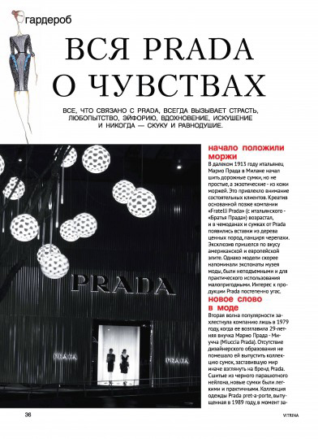

Всё, что связано с PRADA, всегда вызывает страсть, любопытсво, эйфорию, вдохновение, искушение и никогда — скуку и равнодушие

Начало положили моржи
В далеком 1913 году итальянец Марио Прада в Милане начал шить дорожные сумки, но не простые, а экзотические — из кожи моржей.Это привлекло внимание состоятельных клиентов. Креатив основанной позже компании "Fratelli Prada" (с итальянского "Братья Прада") возрастал, и в чемоданах и сумках от Prada появились вставки из дерева ценных пород, панциря черепахи. Эксклюзив пришелся по вкусу американской и европейской элите. Однако модели скорее напоминали экспонаты музея моды, были неподъемными и для практического использования малопригодными. Интерес к продукции Prada постепенно угас.
Новое слово в моде
Вторая волна популярности захлестнула компанию лишь в 1979 году, когда её возглавила 29-летняя внучка Марио Прада — Миучча (Miuccia Prada). Отсутствие дизайнерского образования не помешало ей выпустить коллекцию сумок, заставившую мир иначе взглянуть на бренд Prada. Сшитые из черного парашютного нейлона, новые сумки были легкими и практичными. Коллекция одежды Prada pret-a-porte, выпущенная в 1989 году, в момент завоевала популярность благодаря своей элегантности, вступающей в контраст с распространенной тогда яркой вычурностью. Спустя три года Миучча создала новую марку молодежной одежды — Miu Miu, отличавшуюся нежными и теплыми оттенками и необычными стильнымм фасонами.